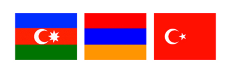
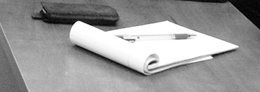

ШАГ К ДИАЛОГУ: АЗЕРБАЙДЖАН - АРМЕНИЯ - ТУРЦИЯ

... Я думаю, что смысл нашей профессии - стремление к правде, с какими бы препятствиями мы не сталкивались. Никто не должен забывать, что предвзятость самый главный враг журналиста. Имея 25 лет профессиональной практики, я очень хорошо усвоила, что никогда не поздно исправлять ошибки ...
■
Турецкая пресса и один из свежих примеров борьбы со стереотипами
Доклад на встрече с журналистами и представителями НПО Армении
■
Политическая журналистика
Доклад на встрече с преподавательским составом и студентами Университета имени им. Грачья Ачаряна
Да, я вирус для армян! Возвращение к церкви в Армении. Стремление к вере. Церковь Ахтамар. Одержимость. Образ Турции. Гостеприимство проблемных соседей. Экономические трудности. Арарат повсюду в Ереване. Свобода прессы. Впечатления на улицах. Писатель выкладывает все начистоту. Меняюшееся лицо Еревана. Музей геноцида. Документы и контр-документы. Может ли история быть столь абстрактной? Свадебная церемония. Ц’тесутюн (до свидания) Ереван. Открытый базар. Андраник Паша. Национальный гимн. Подробнее
Подробнее
Подробнее
Подробнее
Подробнее
■
ГРАНТ ДИНК УБИТ СТАТЬЕЙ 301
■
Турецкая пресса и один из свежих примеров борьбы со стереотипами
Доклад на встрече с журналистами и представителями НПО Армении
■
Политическая журналистика
Доклад на встрече с преподавательским составом и студентами Университета имени им. Грачья Ачаряна
ЕРЕВАНСКИЙ ДНЕВНИК ТУРЕЦКОГО ЖУРНАЛИСТА
Да, я вирус для армян! Возвращение к церкви в Армении. Стремление к вере. Церковь Ахтамар. Одержимость. Образ Турции. Гостеприимство проблемных соседей. Экономические трудности. Арарат повсюду в Ереване. Свобода прессы. Впечатления на улицах. Писатель выкладывает все начистоту. Меняюшееся лицо Еревана. Музей геноцида. Документы и контр-документы. Может ли история быть столь абстрактной? Свадебная церемония. Ц’тесутюн (до свидания) Ереван. Открытый базар. Андраник Паша. Национальный гимн. Подробнее
ИНТЕРВЬЮ (на английском)
Министр ИД Армении Вардан Осканян:
Утерянные возможности. Признание геноцида без предусловий. Статья 301. Новеллы Памука. Армянская конституция.Подробнее
Глава офиса "Ай Дата" и политических вопросов, член Бюро АРФ "Дашнакцутюн" Киро Маноян:
Идеальный план - это Сервский договор. Геноцид осуществили не люди, а правительство. Арбитраж не нужен. Геноцид не единственная проблема. Когда встретились Гюль и Осканян. Армяне в Турции как заложники. Плакат с изображением Арпута (Харберда). Экзамен на знание прошлого.Подробнее
Спикер парламента Армении Тигран Торосян:
Мы гордимся Орханом Памуком. Карский договор. Турецкие депутаты. Арарат как символ. Мы не можем забыть прошлое. Они знают правду.Подробнее
Директор Института армянских исследований Омер Энгин Лютем:
Сначала Армения должна отказаться от своих исторических амбиций. Осканян - эмоционален. Никто не осужден за признание "Геноцида". "Западная Армения".Подробнее
■
ГРАНТ ДИНК УБИТ СТАТЬЕЙ 301
Mастер-классы журналистов из Aзербайджана и Tурции для молодых коллег из Aрмении
Кавказский Центр Миротворческих Инициатив
при поддержке Британского посольства в Армении
Бюджет: GBP 5000
Ноябрь 2006 - март 2007
Кавказский Центр Миротворческих Инициатив
при поддержке Британского посольства в Армении
Бюджет: GBP 5000
Ноябрь 2006 - март 2007
... Это Южный Кавказ, где помимо того, что солнце светит прямо в глаз, нужно быть еще и предельно осторожным, сковывать себя, следить за каждым шагом и словом. В нашем регионе железные границы, в нашем регионе отсутствует цивилизация, в нашем регионе тебя окружают алчность, вероломство и не уважаются твои права...
■
Проблемы СМИ в современном Азербайджане
Доклад на встрече с преподавательским составом и студентами Университета имени им. Грачья Ачаряна
Сначала было слово... и это слово было «барев». Утро. Ближе к обеду. Пресс-конференция. Студентка из Стамбула. Уроки эпатажа. Все к лучшему. Рачья Ачарян. PANARMENIAN рулит! Тотальное невезение. Как Эльмир Мирзоев армянскую молодежь терроризировал. Дом-музей великого Параджанова. Встреча в клубе «Прессинг». Спаниель, не кусающий азербайджанцев. Эчмиадзин - духовный центр армян. Ах, вернисаж... Ах, вернисаж... Гостеприимство Алексея Манвеляна. Дорога назад. Свободный полет Алекпера. Подробнее
Подробнее
■
Проблемы СМИ в современном Азербайджане
Доклад на встрече с преподавательским составом и студентами Университета имени им. Грачья Ачаряна
ЕРЕВАНСКИЙ ДНЕВНИК АЗЕРБАЙДЖАНСКОГО ЖУРНАЛИСТА
Сначала было слово... и это слово было «барев». Утро. Ближе к обеду. Пресс-конференция. Студентка из Стамбула. Уроки эпатажа. Все к лучшему. Рачья Ачарян. PANARMENIAN рулит! Тотальное невезение. Как Эльмир Мирзоев армянскую молодежь терроризировал. Дом-музей великого Параджанова. Встреча в клубе «Прессинг». Спаниель, не кусающий азербайджанцев. Эчмиадзин - духовный центр армян. Ах, вернисаж... Ах, вернисаж... Гостеприимство Алексея Манвеляна. Дорога назад. Свободный полет Алекпера. Подробнее
ИНТЕРВЬЮ
Алексей Манвелян: Все это закончится не скоро...
В Баку мы приехали ночью. А утром в дом матери Зульфугара Руфатоглы позвонила и пришла девушка из газеты «7 гюн». На следующий день ее интервью со мной в русском варианте газеты вышло под заголовком «Наш человек в Ереване». Вначале мне стало как-то не по себе. Что будет, если этот номер дойдет до Армении? ПодробнееГеоргий Ванян: Мы культивируем паразитов
К сожалению, любая попытка пересмотра «туристическо-ресторанного миротворчества» вызывает командное неприятие со стороны приватизировавших сферу общественного диалога НПО-шных монстров, которые считают, что имеют хорошее реноме на Западе... и этого достаточно. ПодробнееАшот Блеян: Сегодня в Армении уже нет правозащиты, есть только скотский страх.
Самая, на мой взгляд, большая проблема это, полный контраст школьной программы, с реальной жизнью. Например, я объясняю своим ученикам, что такое правовое государство, что такое закон, права человека, демократия. Вечером же они по телевизору видят и слушают абсолютно противоположные вещи. Например, оскорбления в адрес азербайджанцев и турок.Подробнее
Спикер парламента Армении Тигран Торосян: Текст резолюции ПАСЕ скрывается от азербайджанского народа
Переговоры, особенно по таким деликатным вопросам, между главами государств проходят за закрытыми дверями, и СМИ прекрасно знают о том, что президенты не станут опровергать или же подтверждать написанное в газетах. Вот и пишут себе, говорят, что вздумается. Мне кажется, что нельзя спекулировать на этой теме. ПодробнееНурсун Эрель: Принципы международной журналистики в Армении не действуют
Люди должны знать, что кроме черного и белого, есть еще и серый цвет. И когда они видят или слышат что-то отличное от того, чем кормит их официоз, они сильно удивляются. Подробнее
... Параллельная Карабахской трагедии, «Война Долмы» была и есть некое «культурное» - на которое способны наши общества - противостояние, которое с момента начала конфликта обрело информационную плоть, со временем все более наращивая всё ширящийся контекст, стала действенным фактором трансформации общественного сознания и коллективного бессознательного обоих наших народов...
■
Наш enfant terrible - культура
Доклад на встрече со студентами Российско - Армянского Университета
■
«Войны долмы» - венец абсурда, или эсхатология «Нашей Культуры»
Интересно, почему же мы все так страстно любим абсурд? Видимо потому, что в действительности мы страшно боимся того, что просто и понятно – настолько страшна реальность?
■
Наш enfant terrible - культура
Доклад на встрече со студентами Российско - Армянского Университета
■
«Войны долмы» - венец абсурда, или эсхатология «Нашей Культуры»
Интересно, почему же мы все так страстно любим абсурд? Видимо потому, что в действительности мы страшно боимся того, что просто и понятно – настолько страшна реальность?
ДВА РАЗНЫХ ИНТЕРВЬЮ С ГОСТЕМ ИЗ АЗЕРБАЙДЖАНА: ПРОВОКАЦИЯ И ДИАЛОГ
Едим долму, играем на дудуке
Корреспондент газеты «168 часов»: Как видно, вы чувствуете себя в Армении довольно вольготно... ПодробнееМы живем в исключительное время
Студентка РАУ: Вы впервые в Армении. Какой Вы ее себе представляли, и какой она оказалась? Подробнее

ПУБЛИКАЦИИ СТУДЕНТОВ
Подборка публицистических работ, созданных во время Мастер-классов и последующего общения с менторами.
■
■
■
■
■
■
■
■
Газета "168 жам" о дискуссии в клубе "Прессинг"
Образ врага в Армении, Азербайджане и Турции
Репортаж Юрия Манвеляна о встрече в Российско-Армянском Университете
Спасибо за все - таки состоявшуюся встречу
■
Мелисса Боз: Я представила свою культуру
Будучи целую неделю здесь в качестве журналиста из Турции, Нурсун Эрель должна была отвечать на вопросы о геноциде. А тем временем я задавалась другим вопросом: Насколько хорошо госпожа Нурсун знает Армению? Подробнее■
Тигран Товмасян: Я - негр
После стольких оскорблений, любое человеческое отношение будит в душе положительные эмоции. Самое сильное из них – благодарность голодной собаки, которую кто-то наконец-то пожалел и накормил. Подробнее■
Вардитер Мкртчян: Ты все еще мой враг, но ненависти больше нет
Вряд ли кто-нибудь захочет вновь испытать этот ужас. Нужно отгородить своих детей от возможной опасности. Они не обязаны отвечать за наши поступки, а тем более за ошибки. Подробнее■
Анна Тавакалян: Образ врага: я - против войны
Молодое поколение наших стран от рождения узнает, что по ту сторону границы по соседству живет нация врагов. Нас учат быть всегда бдительными. А на вопрос, почему те, которые на той стороне, враги, приводятся сотни, тысячи доказательств и аргументов. Подробнее■
Анаит Григорян: Почему мы воюем?
Почему азербайджанский парень, называющий армянскую девушку «сестрой», готов, «если начнется война», взять оружие и убить всех ее близких и погибнуть самому? Подробнее■
Инесса Димидкова: До каких пор мы будем оставаться врагами?
Моя самая большая мечта – чтобы хоть один армянин мог спокойно побывать в Азербайджане, а азербайджанец мог спокойно приехать в Армению. Подробнее■
Ани Мартиросян: История одной деревни
И тогда я узнала, что в маленькой, всеми забытой деревне Кызыл-Шафаг, находящейся в Таширском районе, во времена Советского Союза жили азербайджанцы. Подробнее■
Николай Торосян: Образ врага в СМИ и народном мышлении
Пресса не должна доказывать, что мы – “друзья”, “братья”, или что-то типа того. Нужно просто доказать обществу, что сосуществовать мы можем, или, как минимум, вынуждены сосуществовать. ПодробнееПРИЛОЖЕНИЕ
Газета "168 жам" о дискуссии в клубе "Прессинг"
Образ врага в Армении, Азербайджане и Турции
Репортаж Юрия Манвеляна о встрече в Российско-Армянском Университете
Спасибо за все - таки состоявшуюся встречу

Дезинформация в армянских СМИ
Заявление КЦМИ по поводу публикаций Panarmenian и Regnum
Интервью Алекпера Алиева по поводу действий Организации Освобождения Карабаха
Нам угрожали смертью
Заявление КЦМИ по поводу публикаций Panarmenian и Regnum
Интервью Алекпера Алиева по поводу действий Организации Освобождения Карабаха
Нам угрожали смертью